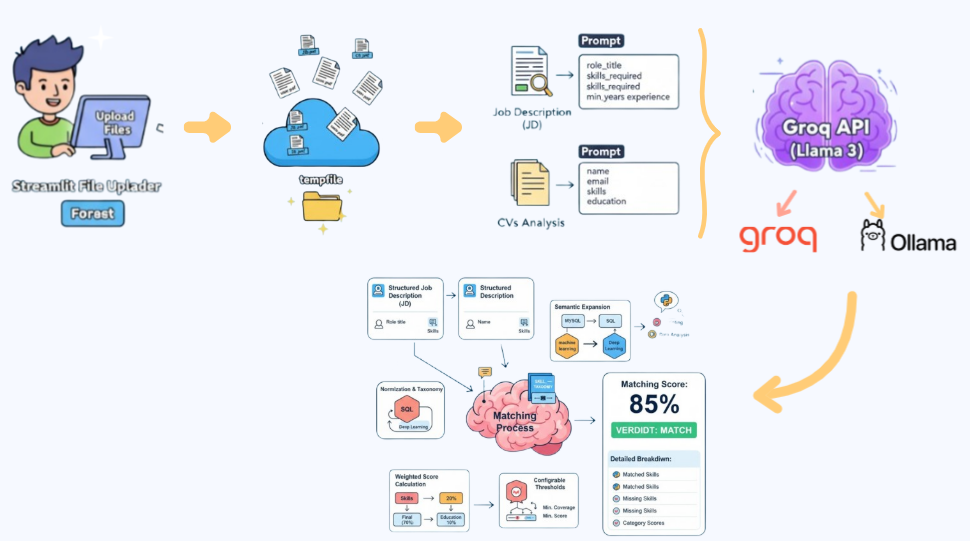
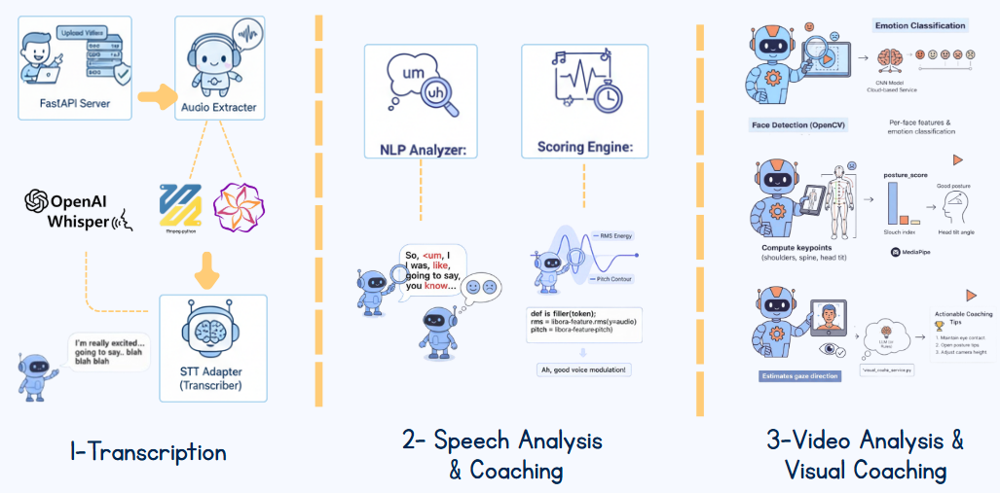
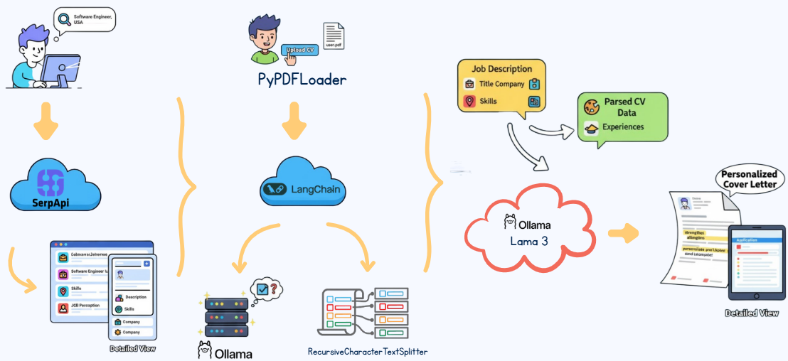
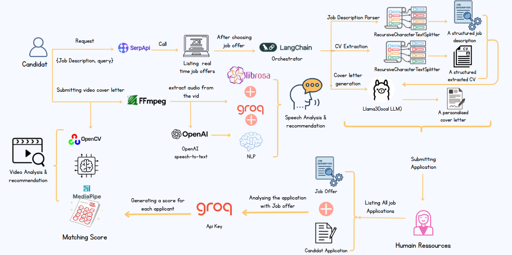

← Retour aux projets
Objectifs du projet
Objectifs métier (Business)
- Automatiser la présélection des candidats (matching CV / offres).
- Améliorer la qualité des profils shortlistés.
- Donner un feedback personnalisé et actionnable aux candidats.
- Réduire le temps passé par les RH sur les tâches répétitives.
- Rendre le processus plus transparent et plus équitable.
Objectifs Data & IA
- Extraire des entités structurées à partir de CV et Job Descriptions.
- Développer un modèle de matching basé sur le NLP.
- Analyser le comportement en entretien (émotions, posture, rythme de parole).
- Générer des rapports et feedbacks interprétables pour les candidats.
- Générer des lettres de motivation personnalisées via LLMs.
Technologies utilisées & prérequis
Backend & Data
- Python 3.x
- Pandas, NumPy
- Scikit-learn
NLP & LLMs
- Groq API + Llama
- Whisper / STT
- LangChain
- Llama 3 via Ollama
Computer Vision & Audio
- OpenCV
- librosa
- MediaPipe / CNN pour les émotions & la posture
Interface & orchestration
- Streamlit (dashboard web)
- SerpAPI (recherche d’offres)
- ffmpeg (traitement vidéo/audio)
Pré-requis
- Python 3.x installé
- Git
- (Optionnel) GPU pour les modèles lourds (STT, vision)
- Docker + Ollama pour exécuter Llama 3 en local
Conception & visuels
MatchINI est structuré en trois grands modules, chacun avec son propre
workflow IA et ses composants techniques.
1. CV / Job Description Matching
- Upload de plusieurs CV et d’une offre (PDF).
- Extraction de texte avec PyMuPDF.
- Extraction d’entités métier via LLM (skills, années d’expérience, rôle, etc.).
- Normalisation des compétences (taxonomie interne).
- Calcul d’un score global pondéré (skills, expérience, formation).
- Génération d’un rapport : MATCH / NO MATCH + détails.

2. AI Interview Coach
- Transcription audio (vidéo → texte) avec Whisper / STT.
- Analyse du discours : filler words, sentiment, rythme (WPM), pauses.
- Analyse vidéo : émotions, posture, regard, présence.
- Consolidation dans un rapport de coaching (forces, axes d’amélioration, conseils).

3. Génération de lettres de motivation
- Recherche d’offres en temps réel via SerpAPI.
- Parsing du CV avec LangChain (PyPDFLoader) → structure JSON.
- Génération de la lettre via Llama 3 (Ollama), en s’alignant sur l’offre.

Architecture de projet

vidéo Démonstratif
Mise en route (procédure d’installation)
MatchINI est organisé en plusieurs sous-modules
(matching_system/, interview_coach/,
cover_letter_gen/). Voici une procédure type pour
lancer l’environnement de développement.
-
Cloner le dépôt (accès privé) :
git clone <url_du_repo_prive>
cd MatchIni
-
Créer et activer un environnement virtuel :
python -m venv .venv
source .venv/bin/activate (Linux / macOS)
ou
.venv\Scripts\activate (Windows)
-
Installer les dépendances Python :
pip install -r requirements.txt
-
Configurer les variables d’environnement :
Créer un fichier .env avec les clés nécessaires
(Groq, OpenAI/Whisper, SerpAPI, etc.).
-
Lancer l’interface Streamlit :
streamlit run app.py
puis ouvrir l’URL indiquée (souvent http://localhost:8501).
-
(Optionnel) Lancer les services complémentaires :
- Démarrer Ollama + Llama 3 pour la génération locale.
- Lancer les scripts dédiés pour l’AI Interview Coach si séparés.
Licence
MatchINI est pour l’instant un projet académique développé dans le cadre
d’un cursus en Data & IA. Le dépôt est privé et n’est pas encore publié
sous une licence open source publique.
À terme, le projet pourra être ouvert sous une licence de type
MIT ou Apache 2.0, après revue
de la propriété intellectuelle et des dépendances utilisées.
Contribution
Les contributions se font aujourd’hui au sein de l’équipe projet
(pull requests sur le dépôt GitHub privé, revues de code, tests).
- Création de nouvelles fonctionnalités (nouveaux modèles, nouveaux rapports).
- Amélioration de l’UX Streamlit et des visualisations.
- Optimisation des performances (temps de traitement vidéo, temps de matching).
- Rédaction et amélioration de la documentation technique.